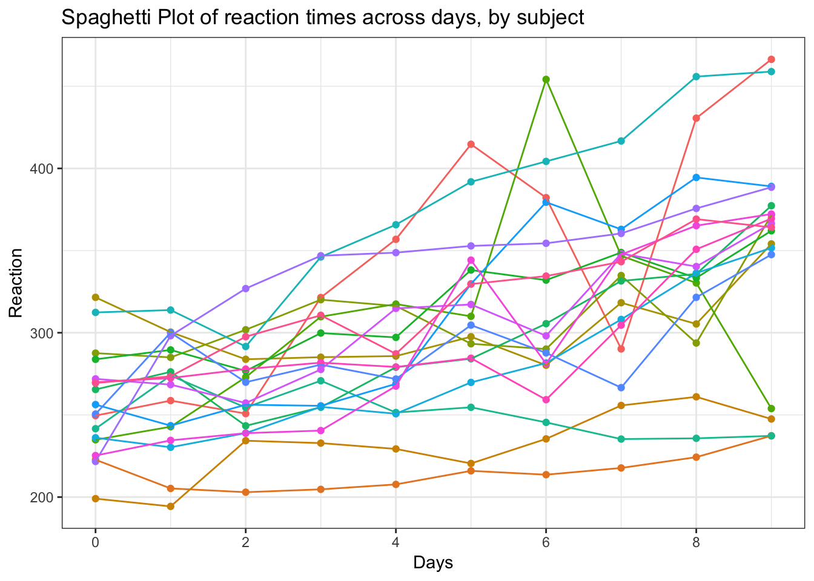
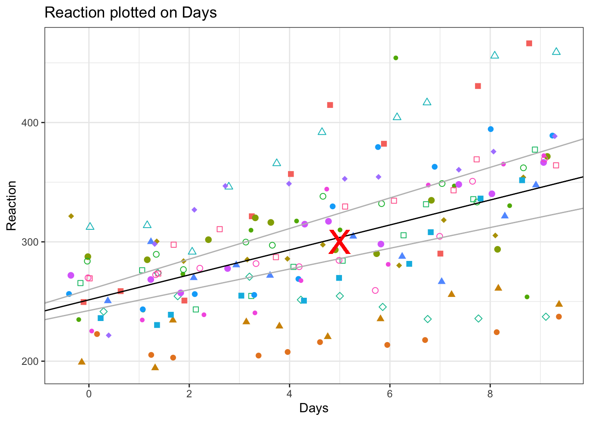
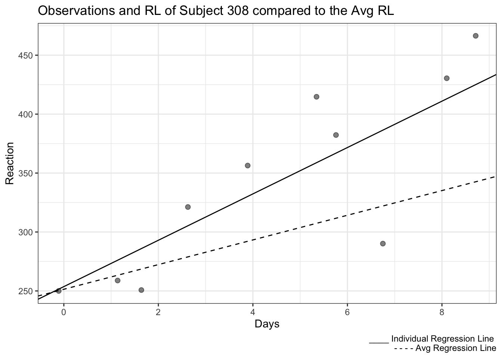
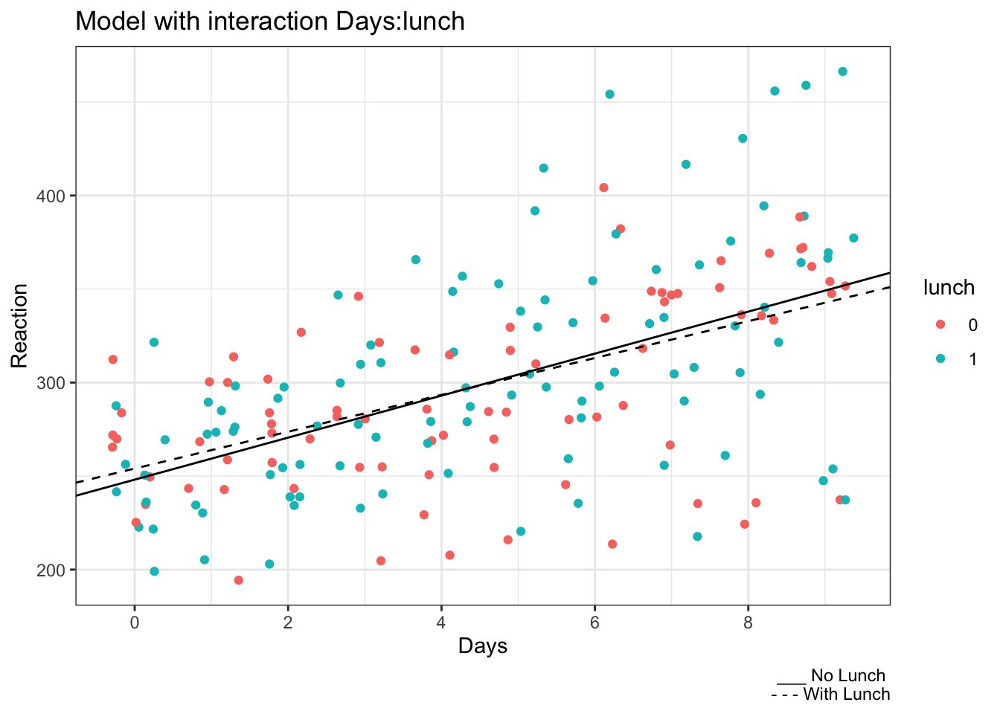
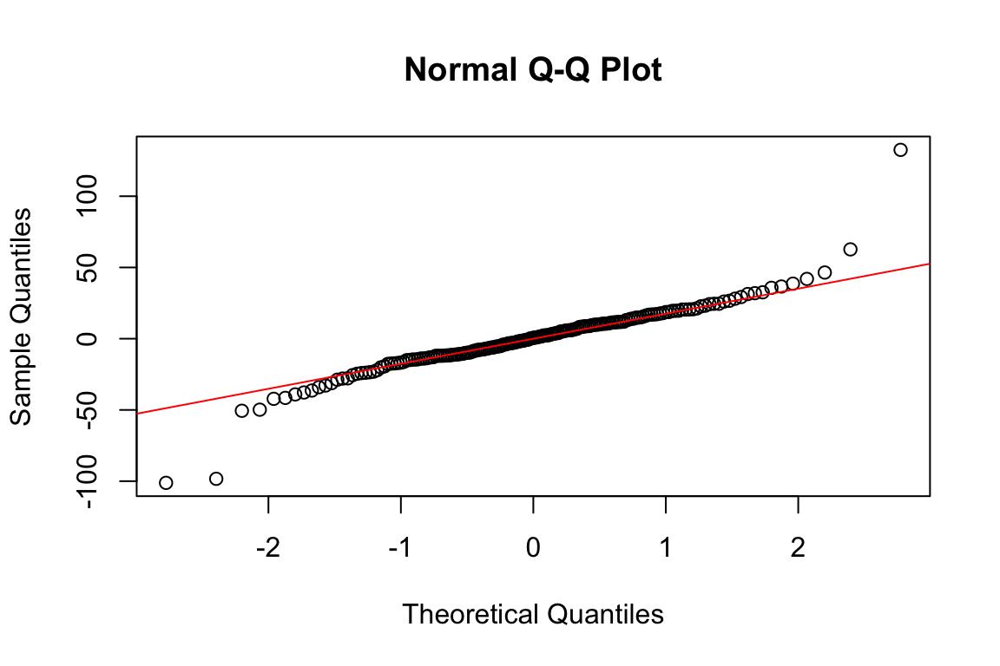
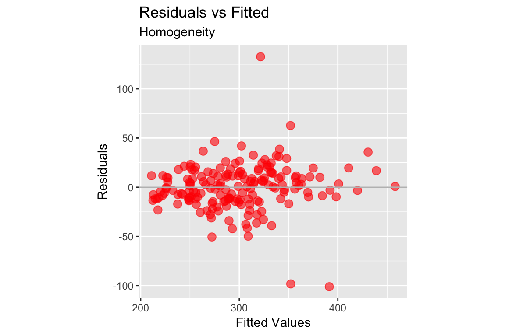
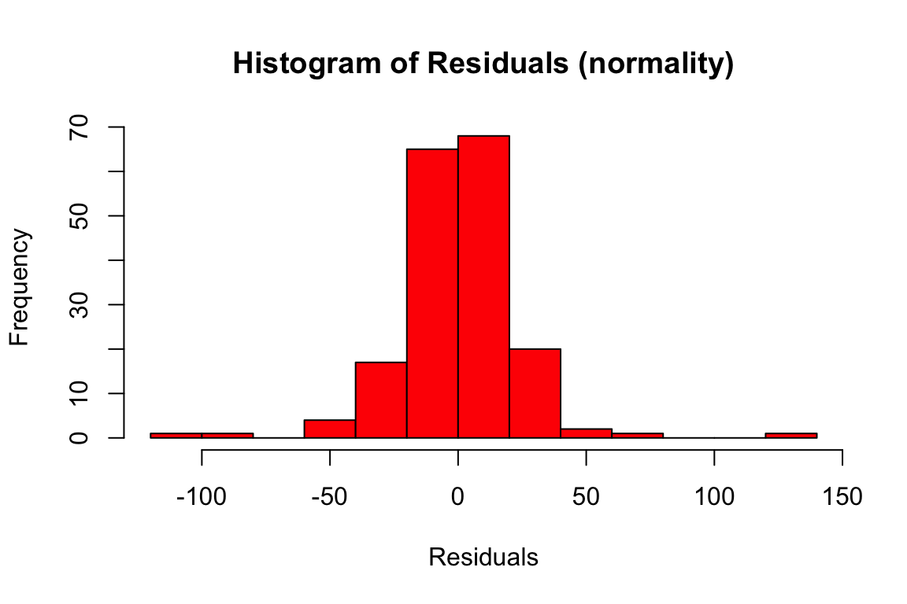
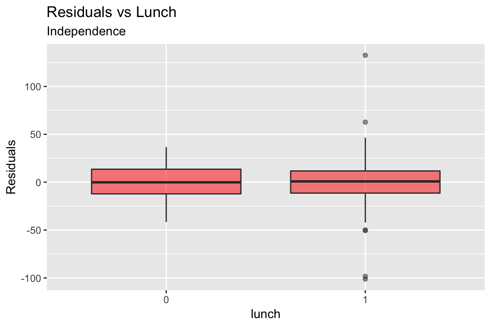

Fitting and Interpreting a Multilevel (mixed) Model in R
Initialize Session:
data("sleepstudy")
# install.packages("lmerTest")
library(lmerTest)
library(ggplot2)
library(knitr)
opts_template$set(figure_small = list(fig.height = 4, fig.width = 6)) Why a Multilevel Model?
Fitting a multilevel model in R is quite trivial, but interpreting the output, plotting the results is another story. Let’s go through all the steps of fitting and interpreting the model with some example data from a study on reaction times after different days of sleep deprivation. The measurements of reaction times is repeated 9 times for each subjects, with increasing levels of sleep deprivation:
kable(head(sleepstudy))| Reaction | Days | Subject |
|---|---|---|
| 249.5600 | 0 | 308 |
| 258.7047 | 1 | 308 |
| 250.8006 | 2 | 308 |
| 321.4398 | 3 | 308 |
| 356.8519 | 4 | 308 |
| 414.6901 | 5 | 308 |
Reaction is our dependent variable, that varies across days. As it is obvious from the above data set, we have several measurements for each subject taken across the week. We are going to fit the model directly on this table. Differently from the tests we are more used to, such as Anova, we do not calculate averages or collapse observations on a condition: the more data points per subject we have, the better. Let’s have a look at the data:
linep <- ggplot(data=sleepstudy, aes(y=Reaction, x=Days, color=Subject, group=Subject)) +
geom_point() + geom_line() +
ggtitle("Spaghetti Plot of reaction times across days, by subject") +
theme(legend.position = "none") + scale_x_continuous(breaks = c(0,2,4,6,8))
linep
From the plot, we can make a series of observations:
The first data point at day 0 is set at different heights on the y axis, corresponding to a different baseline reaction time for each subject when he/she starts the experiment. The “starting point” of each participant is usually called “intercept”
Some lines, corresponding to the degree of variation of Reaction Times between days, are steeper, some are smoother, some are nearly horizontal and so on: it means that some subjects will pass from high to low reactions time quickly, some of them will only change imperceptibly, some other will remain stable overall. The degree of variation of each participant is called “slope”
These individual patterns are usually ignored by traditional tests, such as t-tests and anova, where it is necessary to collapse the dependent variable on one single level, such as:
mean.reaction <- with(sleepstudy,aggregate(Reaction,
list(Day = Days),
mean))
colnames(mean.reaction)[2] <- "Avg Reaction"
mean.reaction$`Avg Reaction` <- round(mean.reaction$`Avg Reaction`)
box <- ggplot(data=sleepstudy, aes(y=Reaction, x=factor(Days))) + geom_boxplot() +
ggtitle("Boxplot of reaction times across days")
require(gridExtra)
g_tab2 <- tableGrob(mean.reaction, rows = NULL)
grid.arrange(box, g_tab2, ncol=2, nrow=1)
It looks somewhat reducing now, compared to the first plot, right? Where did all the by-subject variation go? If we stick to the traditional approach, all the variation went up in smoke! A multilevel model is exactly letting us specifying different starting points (intercepts) and degrees of variations (slopes) for each subject. These parameters form part of the so-called “random effect” or “random error”. As every regression model, a multilevel model is specified by a formula, with a dependent/outcome/response variable (in the current example, Reaction), and some predictors (in the current example, Days). Furthermore, the model will include a specific expression (the random effect) to allow intercepts and slopes to vary by some unit of repetition (in this case, Subject and Days). Since the random effect expresses “variation”, all the other predictors are usually called “fixed” effects or terms. In this case, the factor Days works as a fixed predictor, but has both a fixed and a random effect. Let’s visualize this concepts in the formula, written using the syntax of the lmer function in R.
Fitting a Mixed Model in R
m1 <- lmer(Reaction #this is our dependent variable
~ Days + #this is the fixed term or predictor: the effect we are mostly
# interested in!
( 1 + Days | Subject), #This expression means:
# let each Subject have a different baseline RT
# (intercept) and an individual level of variation
# of RT between Days (slope) --> let each Subject
# have a varying intercept and slope
data=sleepstudy)We fitted the model! We can visualize the results with the function summary:
summary(m1)## Linear mixed model fit by REML. t-tests use Satterthwaite's method [
## lmerModLmerTest]
## Formula: Reaction ~ Days + (1 + Days | Subject)
## Data: sleepstudy
##
## REML criterion at convergence: 1743.6
##
## Scaled residuals:
## Min 1Q Median 3Q Max
## -3.9536 -0.4634 0.0231 0.4633 5.1793
##
## Random effects:
## Groups Name Variance Std.Dev. Corr
## Subject (Intercept) 611.90 24.737
## Days 35.08 5.923 0.07
## Residual 654.94 25.592
## Number of obs: 180, groups: Subject, 18
##
## Fixed effects:
## Estimate Std. Error df t value Pr(>|t|)
## (Intercept) 251.405 6.824 17.005 36.843 < 2e-16 ***
## Days 10.467 1.546 16.995 6.771 3.27e-06 ***
## ---
## Signif. codes: 0 '***' 0.001 '**' 0.01 '*' 0.05 '.' 0.1 ' ' 1
##
## Correlation of Fixed Effects:
## (Intr)
## Days -0.138Understanding the Summary Output
Even though our main focus is understanding the numerical output, the summary is remainding us that the model is linear, it has been fitted with Restricted Maximum Likelihood method (REML), and degrees of freedom have been calculated with the Satterthwaite approximation. All these parameters can be changed by an intermediate user: I will not dig any more deep here, but stick to the default formulation of the mixed model.
The REML criterion at convergence corresponds to the number of iteriations reached for estimating the model (not really interesting for us, not usually reported in scientific papers). The section “scaled residuals” are the descriptives of the residuals, that are more relevant in case the aim is predicting new values - which is not the case. So let’s move on.
The random effects contain two parameters: Variance and Standard Deviation. This is all what random effects are about after all: variation in the data. We can see here that variations between individual subjects are accounting for a big part of the variance (612), while the variation of subjects between days is smaller (36), but still noticeable. We also have the residual variation, the variance that is not explained by neither individual nor within-days variation. It is quite high here: it is partly a good sign, as it might indicate that part of the variance is indeed related to some fixed effect. Lastly, we have the “Corr” parameter: it indicates the correlation between the random effects. In this example, the correlation between observations in different days within the same subject is infinitesimal (0.07). In case the model is too complicated (for example, with many predictors, with interactions, and fails to converge), it can be specified in the formula that the random effects are not correlated by writing (1 + Days || Subject).
With regard to the fixed effects, we have two rows, one for the intercept, and one for the fixed predictor, Days. Let’s summarise how to interpret the fixed effects table:
- In general, the estimate is the measure of the effect and can be called “coefficient”. A very small estimate means that the predictor has a very small effect. A negative estimate means that the predictor decreases the response variable. The estimate is on the same scale of the response variable: if we are investigating the variations of neonatal heights in cm, and the predictor “mom_height” has an estimate of 2.5, it means that one unit increase of “mom_height” produces an increase of 2.5 cm of the baby’s height.
In other kinds of models, such as binomial models, the coefficient estimate does not represent an average, but a probability. For example, we may have fitted a binomial model for investigating the proportion of mutation of a certain gene (coded as a binary factor 0/1) depending on mom_age. In that case, an estimate of 2.5 for mom_age indicates the probablity of an infant of having a mutation depending on his mom’s age. The estimate is 4 times the actual difference in proportion: in this case we have a 2.5/4=0.6*100=60% higher probability that an infant will have a mutation for a 1 unit increase in mom_age.
The Std. Error is the Standard Error, or the uncertainty in the coefficient estimate. Of course we need this parameter: the coefficient estimate is an average, calculated from the individual estimates that we specified with the random effect. As all the averages, it comes with its own standard error. Std error should not be bigger than the coefficient estimate, as it would indicate that the coefficient estimate is very imprecise. In general, we can calculate a confidence interval around the coefficient estimate of 2+/- Std Errors. In this example, we are pretty confident that the the estimate of the effect of Days will be no less that 10-1.5 and no more than 10+1.5.
df are the Degress of Freedom that, like in every statistical test, depend on the sample size (in this case, 18 total subjects)
t value is the ratio between the coefficient estimate and the std error: for Days, 10.467/1.546 = 6.77. As a general rule, a t-value above 2 indicates a significant result. In binomial models, this parameter is called z-value.
the Pr(>|t|) is the p-value. It has been introduced recently inside the lmer function and some people (mostly statisticians) still think that it should not be considered, but that coefficients estimates ONLY should be looked at instead. However, it is useful to include a p-value since it is the only measure that most people understand. A p-value below 0.05 indicates that the effect of the fixed predictor (can be Days, or mom_height) is affecting the dependent variable above the chance level.
Visualizing random and fixed effects
All of these parameters can be visualized in isolation from the whole summary:
- Random Effects:
VarCorr(m1, comp=c("Variance","Std.Dev."), digits=2)## Groups Name Std.Dev. Corr
## Subject (Intercept) 24.7366
## Days 5.9229 0.066
## Residual 25.5918- Fixed effects:
fixef(m1)## (Intercept) Days
## 251.40510 10.46729This “10.46729” tells us that for every variation in a unit of Days (in this case, 1), the Reaction increases of 10.5 ms on average.
The “(Intercept)” that we find together with the fixed predictor coefficient is a little bit more trickier: it is a constant, and it represents the value of Reaction when all the predictors are set to zero. Most of the times, this “(Intercept)” does not make much sense and it is ignored: in the small example of neonatal height, the “(Intercept)” would indicate the value of a baby’s height whem mom_height is zero - but of course this is impossible. In the sleepstudy example, the “(Intercept)” still makes sense, since we have a baseline-0 day.
But what about all those varying intercepts and slopes? Since the coefficient estimate is a unique value and an average, one could ask why we have even bothered with all this complexity. The justification is the way the coefficient estimate is calculated. It is actually the average between the individual coefficients calculated by subject and by days. But where are these individual coefficients? Just below our nose:
coef(m1)## $Subject
## (Intercept) Days
## 308 253.6626 19.6665597
## 309 211.0108 1.8467699
## 310 212.4488 5.0177063
## 330 275.0940 5.6531411
## 331 273.6636 7.3976093
## 332 260.4439 10.1952325
## 333 268.2441 10.2438881
## 334 244.1731 11.5417935
## 335 251.0724 -0.2851939
## 337 286.2916 19.0963068
## 349 226.1971 11.6403856
## 350 238.3357 17.0815045
## 351 255.9828 7.4520035
## 352 272.2666 14.0036922
## 369 254.6802 11.3395736
## 370 225.7940 15.2895377
## 371 252.2122 9.4791130
## 372 263.7185 11.7515240
##
## attr(,"class")
## [1] "coef.mer"The model contains different intercepts (first column) and slopes (second column) for each of the 18 subjects. Averaging the 18 “(Intercept)” and Days estimates gives exactly the “(Intercept)” and coefficient estimates given in the summary:
mean(coef(m1)$Subject[,1])## [1] 251.4051mean(coef(m1)$Subject[,2])## [1] 10.46729The same is true for the random effect, as we have subject- and day- level errors:
ranef(m1)## $Subject
## (Intercept) Days
## 308 2.2575329 9.1992737
## 309 -40.3942719 -8.6205161
## 310 -38.9563542 -5.4495796
## 330 23.6888704 -4.8141448
## 331 22.2585409 -3.0696766
## 332 9.0387625 -0.2720535
## 333 16.8389833 -0.2233978
## 334 -7.2320462 1.0745075
## 335 -0.3326901 -10.7524799
## 337 34.8865253 8.6290208
## 349 -25.2080191 1.1730997
## 350 -13.0694180 6.6142185
## 351 4.5777099 -3.0152825
## 352 20.8614523 3.5364062
## 369 3.2750882 0.8722876
## 370 -25.6110745 4.8222518
## 371 0.8070591 -0.9881730
## 372 12.3133491 1.2842380
##
## with conditional variances for "Subject"The average estimate coefficient is equal to each individual coefficient estimate minus its relative error. For example:
#First Subject:
coef(m1)$Subject[1,2] - ranef(m1)$Subject[1,2]## [1] 10.46729#Second Subject:
coef(m1)$Subject[2,2] - ranef(m1)$Subject[2,2]## [1] 10.46729But what do all this coefficients mean? As we introduced previously, the coefficients are estimates of the value of Reaction. Given the estimate coefficient and the random error, we can calculate an estimated value of Reaction for each subject and each day. Each subject has a final Reaction of "Intercept + Slope*x", where x are the original values of the fixed predictor - 1 to 9 Days in the example. For example, on Day 1, for subject 308 we have:
253.6637 + 19.6662580*1## [1] 273.33A final reaction of 273.2 ms. It is slightly different from the average estimate Reaction, calculated with the same formula but with the average intercept and slope:
251.40510 + 10.46729*1## [1] 261.8724The difference between the Reaction of subject 308 and the average Reaction is exactly equal to the sum of the random errors of subject 308:
273.33 - 261.8724## [1] 11.45762.2585647 + 9.1989720## [1] 11.45754Calculating and Interpreting Confidence Intervals
After we understood correctly the output of the model, we should be able to report it correctly and plot it. For mixed model, it is generally important to explain the formula that we used, and list the values of the average coefficient estimate, standard error, df, t-value and p-value. Also, confidence intervals are generally reported. Various methods exist to calculate them. A quite popular one is to use use a “bootstrap” method, that is to do the calculation with a certain number of simulations (to make the estimate more precise):
set.seed(88) # I set the seed when the generation of new data is involved...
# otherwise the estimate will be different every time the script is run
ci <- confint(m1, method="boot", nsim=10)
library(dplyr)
ci <- add_rownames(data.frame(ci), "Term")
colnames(ci) <- c("Term", "CI 2.5%", "CI 97.5%")
kable(ci[5:6,])| Term | CI 2.5% | CI 97.5% |
|---|---|---|
| (Intercept) | 242.445532 | 259.90903 |
| Days | 8.701508 | 12.82127 |
The confidence interval of a coefficient estimate indicates that only in the 5% cases the coefficient estimates might fall below CI 2.5% or above CI 97.5%. In psychological experiments, we need to consider two aspects of the CI:
Does the range between CI 2.5% and CI 97.5% contains zero? If yes, there is a high chance that the effect of the predictor may be 0, thus not effect at all!
How wide is the CI: an excessively wide CI means that the error of estimation is too big, and the coefficient estimate might be imprecise
Are the signs of the CIs discordant? Of course, if the the signs are discordant, the range contains zero. But also: our model is not capable of estimating whether our fixed predictor decreases/increases the dependent variable!
The final step: plotting the model
Finally, we have come to plot our data and model. We will plot the data points, and the regression lines based on our average estimate coefficients:
ggplot(data=sleepstudy, aes(x=Days, y=Reaction, col=Subject, shape=Subject)) +
geom_jitter(size=2) + theme(legend.position = "none") +
scale_shape_manual(values =
c(15,16,17,18,19,20,21,22,23,24,15,16,17,18,19,20,21,22,23,24,25)) +
geom_abline(intercept = fixef(m1)[1], slope=fixef(m1)[2]) + #Regression Line (RL).
# At zero, the line starts from
# 251.4, and increases of 10.4
# for every unit of Day
geom_abline(intercept = ci$`CI 97.5%`[5], slope=ci$`CI 97.5%`[6], col="grey") + #Upper Bound of RL
geom_abline(intercept = ci$`CI 2.5%`[5], slope=ci$`CI 2.5%`[6], col="grey") + #Lower Bound of RL
scale_x_continuous(breaks = c(0,2,4,6,8)) +
ggtitle("Reaction plotted on Days") +
geom_text(aes(5, 300, label="X"), col="red", size=10) 
The black regression line represent the average effect of Days on Reaction. It is clearly an ascending line, with a quite steep increase, showing that Reaction is proportionally increasing of 10 each Day. In fact, if we start roughly from a baseline Reaction of 250 ms at day 0, we have a Reaction of 300 at Day 5 (250 + 10*5), as indicated by the red cross.
Of course, we can also plot all the regression lines that we have for each subject. Let’s try with subject 308:
fe <- coef(m1)$Subject
fe <- add_rownames(data.frame(fe),"Subject")
sub <- filter(sleepstudy, Subject=="308")
ggplot(data=sub, aes(x=Days, y=Reaction)) + geom_jitter(size=2, alpha=0.5) +
geom_abline(intercept=fe$X.Intercept.[1],slope=fe$Days[1]) +
geom_abline(intercept=fixef(m1)[1],slope=fixef(m1)[2], linetype="dashed") +
labs(title="Observations and RL of Subject 308 compared to the Avg RL",
caption="____ Individual Regression Line \n - - - - Avg Regression Line") +
scale_x_continuous(breaks = c(0,2,4,6,8))
Mixed models can include interaction terms
Example:
set.seed(88)
lunch <- sample(c(0,1), replace=TRUE, size=18)
sleepstudy$lunch <- factor(lunch)
head(sleepstudy)## Reaction Days Subject lunch
## 1 249.5600 0 308 0
## 2 258.7047 1 308 0
## 3 250.8006 2 308 1
## 4 321.4398 3 308 0
## 5 356.8519 4 308 1
## 6 414.6901 5 308 1In this dataset, the fact that the participant had lunch or not before the experiment is specified as a factor with 2 levels (0 and 1). We can specify an interaction between Day and Lunch in the formula:
m2 <- lmer(Reaction
~ Days * lunch +
( 1 + Days | Subject),
data=sleepstudy)
summary(m2)## Linear mixed model fit by REML. t-tests use Satterthwaite's method [
## lmerModLmerTest]
## Formula: Reaction ~ Days * lunch + (1 + Days | Subject)
## Data: sleepstudy
##
## REML criterion at convergence: 1735.3
##
## Scaled residuals:
## Min 1Q Median 3Q Max
## -3.9252 -0.4668 0.0292 0.4606 5.1734
##
## Random effects:
## Groups Name Variance Std.Dev. Corr
## Subject (Intercept) 633.2 25.163
## Days 35.2 5.933 0.07
## Residual 658.0 25.651
## Number of obs: 180, groups: Subject, 18
##
## Fixed effects:
## Estimate Std. Error df t value Pr(>|t|)
## (Intercept) 248.112 8.236 31.222 30.127 < 2e-16 ***
## Days 11.234 1.770 27.783 6.349 7.46e-07 ***
## lunch1 5.928 8.054 159.466 0.736 0.463
## Days:lunch1 -1.380 1.541 157.663 -0.896 0.372
## ---
## Signif. codes: 0 '***' 0.001 '**' 0.01 '*' 0.05 '.' 0.1 ' ' 1
##
## Correlation of Fixed Effects:
## (Intr) Days lunch1
## Days -0.318
## lunch1 -0.543 0.407
## Days:lunch1 0.457 -0.484 -0.840The additional question that we asked here is whether there is an interdependence of the effect of Day and Lunch. The result relative to Days:lunch in the above output should be interpreted like this: the difference between days is lower for those Subject that had lunch (where lunch==1). In other words, a Subject that had lunch on the Day of the experiment, will have a Reaction that is weithed by the interaction term.
In the specific case, the participant with lunch will start with a little higher Reaction compared to fast subject (because we add 5.92 to the starting point - the intercept); however, the final Reaction at Day 9 will be a little bit less (because every day we are subtracting 1.38).
By doing the calculation, the average Reaction for participants who had lunch on Day 1 will be:
(248.11 + 5.92) + (11.23 - 1.38)*1## [1] 263.88while the average reaction when lunch was 0 is simply:
248.11 + 11.23*1## [1] 259.34On Day 9, the situation is different. For fed subjects:
(248.11 + 5.92) + (11.23 - 1.38)*9## [1] 342.68while the average reaction when lunch was 0 is:
248.11 + 11.23*9## [1] 349.18A very handful way of understanding interactions is plotting them.
ggplot(data=sleepstudy, aes(x=Days, y=Reaction, col=lunch)) + geom_jitter() +
geom_abline(intercept = 248.11 + 5.92, slope = 11.23 - 1.38, linetype="dashed") +
geom_abline(intercept = 248.11, slope = 11.23) +
labs(title="Model with interaction Days:lunch",
caption="___ No Lunch \n - - - With Lunch") +
scale_x_continuous(breaks = c(0,2,4,6,8))
Note: Regarding this last example with lunch… of course, it does not make sense, as I made up the data with the sample function… the column lunch is a random sequence of zeros and ones! I did not even look at the p-value, but only at the coefficient estimate for demonstrative purposes
Diagnostic plots
Their purpose is to demonstrate that the model fits the data correctly.
The QQNorm plot shows theoretical and sample data extracted from the observed values (representative of quantiles) and aims to demonstrate that the data fits the normal distribution:
qqnorm(resid(m1)) ; qqline(resid(m1), col="red")
Another important diagnostic plot is the Residual Plot. Residuals are “the difference between the observed value and the estimated value of the quantity of interest (for example, a sample mean)” (from wikipedia). In the case of a regression, residuals represent the distance between the depedent variable (Reaction) and its estimates worked out by the regression function (the so-called fitted values). Plotting the residuals can demonstrate that various important assumptions are respected:
- Homogeneity: data points should not be dispersed. We might spot some outliers.
ggplot(data = sleepstudy, aes(x = predict(m1), y = cbind(resid(m1)))) +
geom_point(size = 3, col = "red", alpha = 0.6) +
geom_abline(slope = 0,
intercept = 0,
col = "gray") +
labs(x = "Fitted Values", y = "Residuals",
title = "Residuals vs Fitted",
subtitle = "Homogeneity") +
coord_fixed() 
- Normality: see the shape, is it normally distributed?
hist(resid(m1), main = "Histogram of Residuals (normality)",
xlab = "Residuals", col = "red")
- Independence: finally, plotting the residuals vs the independent variables
ggplot(data = sleepstudy, aes(x = Days, y = cbind(resid(m1)))) +
geom_jitter(size = 3, col = "red", alpha = 0.5) +
labs(y = "Residuals", title = "Residuals vs Days", subtitle = "Independence") +
scale_x_continuous(breaks = c(0,2,4,6,8))ggplot(data = sleepstudy, aes(x = lunch, y = cbind(resid(m1)))) +
geom_boxplot(fill = "red", alpha = 0.5) +
labs(y = "Residuals",
title = "Residuals vs Lunch",
subtitle = "Independence") 